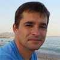

<!DOCTYPE html><html lang="en"><head><title>FHIR.ru</title><meta charset="utf-8"><link rel="stylesheet" href="https://maxcdn.bootstrapcdn.com/bootstrap/3.3.6/css/bootstrap.min.css" integrity="sha384-1q8mTJOASx8j1Au+a5WDVnPi2lkFfwwEAa8hDDdjZlpLegxhjVME1fgjWPGmkzs7" crossorigin="anonymous"><link rel="stylesheet" href="https://maxcdn.bootstrapcdn.com/font-awesome/4.4.0/css/font-awesome.min.css"><link rel="stylesheet" href="css/style.min.css"><link rel="icon" href="img/favicon.ico" type="image/x-icon"><link rel="shortcut icon" href="img/favicon.ico" type="image/x-icon"><link rel="shortcut icon" href="img/favicon.png" type="image/png"><link rel="apple-touch-icon" href="img/apple-touch-icon.png"></head><body></body></html><div class="header"><div class="container"><div class="row"> <div class="col-md-4"><p class="rus">Россия</p></div><div class="col-md-8"><nav><ul><li><a href="http://fhir-ru.github.io/">Спецификация</a></li><li><a href="http://www.hl7.org.ru/">HL7 Россия</a></li><li><a href="#projects">Проекты</a></li></ul></nav></div></div></div></div><div class="intro"><div class="container"><div class="row"><div class="col-md-8"><p class="intro-text text-muted">HL7® Fast Healthcare Interoperability Resources® <br>(ресурсы для обмена медицинской информацией) <p>– это новый стандарт обмена медицинской информацией от международной организации HL7®. FHIR создаётся с учётом стандартов 
и спецификаций HL7 второго (HL7 v2) и третьего (HL7 v3) поколений, CDA, задействует современные веб-технологии и направлен 
на практическую реализацию.</p><p>Основным структурным элементом стандарта FHIR® является "ресурс". Для облегчения понимания можно провести аналогию между
FHIR-ресурсами и бланками документов для записи клинической и административной информации, которую можно зафиксировать и 
совместно использовать. Стандарт FHIR® определяет общий шаблон для каждого типа клинической информации: один для аллергии, 
один для медицинских предписаний, один для медицинских направлений и т. п.</p></p><div class="row"><div class="intro-buttons"><div class="col-md-12"><a href="http://fhir-ru.github.io/overview-dev.html" class="btn btn-default btn-lg">Введение для разработчиков</a><a href="http://fhir-ru.github.io/overview-clinical.html" class="btn btn-default btn-lg">Введение для медицинских работников</a></div></div></div></div><div class="col-md-4"><p class="text-muted"> Основная идея стандарта FHIR® − создать базовый набор ресурсов, которые по-отдельности или в комбинации смогут 
удовлетворить потребности большинства сценариев использования. Ресурсы FHIR® определяют содержание и структуру основного 
набора информации, который является общим для большинства реализаций. Существует встроенный механизм расширения ресурсов для 
покрытия остальных сценариев по мере их возникновения.</p></div></div></div></div><div class="persons"><div class="container"><div class="row"><h5 class="text-title pull-left">Редакционная команда HL7® FHIR®</h5><a href="http://fhir-ru.github.io/credits.html" class="link-title pull-right">Сообщество и благодарности</a></div><div class="row"><div class="col-md-4"><div class="person-box"><div class="media"><a href="#" class="media-left"></a><div class="media-body"><h4 class="media-heading">Грэм Грив</h4><p class="text-mute">Healthcare Interoperability consultant and developer. Chair several HL7 committees and contribute and developer.</p></div></div></div><div class="person-box"><div class="media"><a href="#" class="media-left"></a><div class="media-body"><h4 class="media-heading">Ллойд Маккензи</h4><p class="text-mute">Information with architect with globally recognized expertise in HL7 data modeling and design data modeling.</p></div></div></div><div class="person-box"><div class="media"><a href="#" class="media-left"></a><div class="media-body"><h4 class="media-heading">Эвут Крамер</h4><p class="text-mute">Architect and software engineer. Consultancy and coaching for teams modelling and messaging.</p></div></div></div></div><div class="col-md-4"><div class="person-box"> <div class="media"><a href="#" class="media-left"></a><div class="media-body"><h4 class="media-heading">Джеймс Агню</h4><p class="text-mute">He is heavily involved with HL7 (a healthcare standards body) and heavily involved with leads the HAPI project.</p></div></div></div><div class="person-box"><div class="media"><a href="#" class="media-left"></a><div class="media-body"><h4 class="media-heading">Джош Мандел</h4><p class="text-mute">Physician, programmer, and would-be pâtissier/poet. Lead Architect for SMART and would-be Platforms.</p></div></div></div><div class="person-box"><div class="media"><a href="#" class="media-left"></a><div class="media-body"><h4 class="media-heading">Вьет Нгуен</h4><p class="text-mute">Internist, pediatrician, clinical informaticist. CMIO @ Systems Made Simple. Amateur photographer/chef.</p></div></div></div></div><div class="col-md-4"><div class="person-box"><div class="media"><a href="#" class="media-left"></a><div class="media-body"><h4 class="media-heading">Брайан Постлетвэйт</h4><p class="text-mute">Through the years of experience in the many different environments, I have gained extensive knowledge in how.</p></div></div></div><div class="person-box"><div class="media"><a href="#" class="media-left"></a><div class="media-body"><h4 class="media-heading">Дэвид Хэй</h4><p class="text-mute">In my self-appointed role as 'FHIR evangelist' ('FHIR Fanatic') at Orion Health and HL7 New Zealand.</p></div></div></div><div class="person-box"><div class="media"><a href="#" class="media-left"></a><div class="media-body"><h4 class="media-heading">Рене Спронк</h4><p class="text-mute">Provision of educational services related to standards for interoperability in healthcare all services to fhir IT.</p></div></div></div></div></div></div></div><div class="video-intro"><div class="container"><div class="row"><div class="col-md-4"><iframe src="https://player.vimeo.com/video/106255531?byline=0&amp;portrait=0" width="370" height="210" frameborder="0" webkitallowfullscreen mozallowfullscreen allowfullscreen class="img-rounded"></iframe></div><div class="col-md-4"><iframe src="https://player.vimeo.com/video/146477763?byline=0&amp;portrait=0" width="370" height="210" frameborder="0" webkitallowfullscreen mozallowfullscreen allowfullscreen class="img-rounded"></iframe></div><div class="col-md-4"><iframe src="https://player.vimeo.com/video/112791998?byline=0&amp;portrait=0" width="370" height="210" frameborder="0" webkitallowfullscreen mozallowfullscreen allowfullscreen class="img-rounded"></iframe></div></div></div></div><div class="persons-ru"><div class="container"><h5 class="text-title">HL7® FHIR® Россия</h5><div class="row"><div class="col-md-6"><h4>Health Samurai </h4><p class="text-muted">Команда Health Samurai (ООО "Вейваксесс", Санкт-Петербург) является членом организации "HL7 Россия" и занимается продвижением стандарта FHIR® в России, оказывая консультирование в области практического использования стандарта HL7® FHIR® при разработке медицинских информационных систем. Команда Health Samurai сотрудничает с разработчиками стандарта HL7® FHIR®, принимает участие в проводимых HL7® конференциях по FHIR®.</p><div class="person-box"><div class="media"><a href="#" class="media-left"></a><div class="media-body"><h4 class="media-heading">Николай Рыжиков</h4><p class="text-muted">Лидер команды</p></div></div></div><div class="person-box"><div class="media"><a href="#" class="media-left"></a><div class="media-body"><h4 class="media-heading">Максим Боднарчук</h4><p class="text-muted">Разработчик</p></div></div></div><div class="person-box"><div class="media"><a href="#" class="media-left"></a><div class="media-body"><h4 class="media-heading">Александра Павлишина</h4><p class="text-muted">Разработчик</p></div></div></div></div><div class="col-md-6"><a class="twitter-timeline" href="https://twitter.com/health_samurai" data-widget-id="671327959983202304">Твиты от @health_samurai</a>
<script>!function(d,s,id){var js,fjs=d.getElementsByTagName(s)[0],p=/^http:/.test(d.location)?'http':'https';if(!d.getElementById(id)){js=d.createElement(s);js.id=id;js.src=p+"://platform.twitter.com/widgets.js";fjs.parentNode.insertBefore(js,fjs);}}(document,"script","twitter-wjs");</script></div></div></div></div><div class="projects"><div class="container"><div class="row"><h5 class="text-title">Проекты, в которых используется стандарт HL7® FHIR®</h5></div><div class="row"><div class="col-md-4"><div class="box"><a name="projects"></a><h3>Health Samurai Team</h3><p>Хранилище данных на базе стандарта HL7® FHIR®, с открытым исходным кодом</p><a href="http://fhirbase.github.io/index.html">FHIRbase</a></div></div><div class="col-md-4"><div class="box"><h3>"Нетрика" совместно с СПб ГБУЗ МИАЦ</h3><p>Сервис обмена данными лабораторных исследований</p></div></div><div class="col-md-4"><div class="box"><h3>СПб ГБУЗ МИАЦ</h3><p>Система управления реестром медицинских организаций анкт-Петербурга</p></div></div><div class="col-md-4"><div class="box"><h3>СПб ГБУЗ МИАЦ</h3><p>Справочник лабораторных тестов и справочник лабораторных услуг Санкт-Петербурга</p></div></div></div></div></div><div class="footer"><div class="container"><footer><p>Copyright © 2015 FHIR.ru</p></footer><script src="js/main.min.js"></script></div></div>